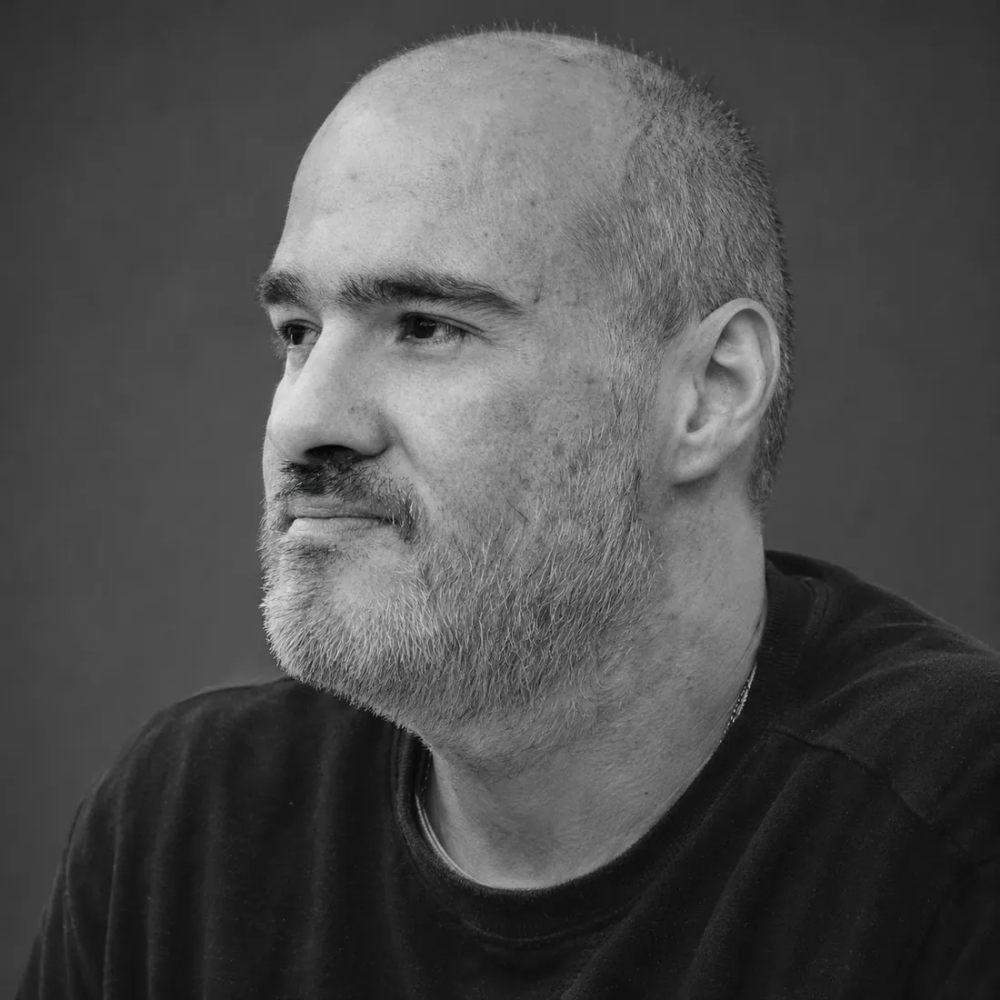

A mãe
Em setembro de 2021 a mãe dele morreu de uma semana para outra. Ele tinha cuidado dela no último ano, lembrando dos remédios, segurando a rotina. Desde novembro daquele ano mora sozinho.

A história
Ele não planejou nada disso. Diz que antes da Rosa do Deserto tinha visto rosa na vida umas três vezes, nunca deu uma flor para ninguém e nunca ligou para flor nenhuma.
Em setembro de 2021 a mãe dele morreu de uma semana para outra. Ele tinha cuidado dela no último ano, lembrando dos remédios, segurando a rotina. Desde novembro daquele ano mora sozinho.
Um ano depois, numa adoração de madrugada, ele perguntou o que ia fazer da vida. Ouviu que Deus traria alguém que ele já conhecia e de quem jamais suspeitaria. Achou que estava viajando e foi dormir.
Dois dias depois sonhou com a mãe num canteiro de rosas. Ela colheu uma flor e entregou a Nossa Senhora, que veio correndo e pôs a rosa na mão dele. Acordou com aquela rosa na cabeça, uma rosa que nunca tinha visto.
Uma semana depois reencontrou no Instagram uma amiga de vinte anos atrás, ex-namorada de um amigo próximo. Ela estava morando fora, recém-separada, depois de perder três filhos antes de eles nascerem.
Ele não soube o que dizer. Pediu licença, foi tomar banho e começou a orar. E veio a pergunta que o derrubou, porque os médicos tinham mandado abortá-lo para salvar a mãe, e o pai pediu para tentarem salvar os dois.
Saiu do chuveiro e escreveu a letra inteira de uma vez. Chamou o amigo que faz as melodias. No fim da primeira vez que cantaram, os dois estavam chorando, e a diarista também. Ali ele prometeu a ela vinte músicas.
Quis mandar sementes de rosa para ela, porque flor cortada não aguentaria a viagem. Procurou na internet e o quarto resultado era semente de rosa do deserto. Olhou a foto e era igual à rosa do sonho.
Depois foi pesquisar o que a planta faz. A rosa do deserto brota na areia e mostra onde tem água. E no deserto, água é vida. Foi aí que ele entendeu o nome e parou de discutir.
Todo mundo pergunta. Ele nunca vai dizer, e diz que não faria diferença saber, porque a história nunca foi sobre quem ela é.
“Foi só um jeito de Deus me mostrar o conceito.”
Ela ouve todas as músicas antes de qualquer pessoa. É o único público garantido que ele tem. Segundo ele, quem tenta cuidar de todo mundo acaba não cuidando de ninguém, e quem cuida de uma rosa só descobre que o passarinho leva a semente para longe.